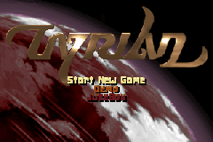
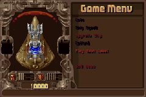
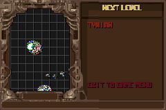
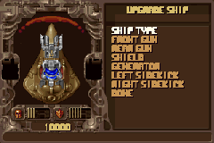
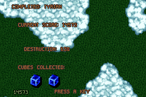

原始資料直接驅動
MUS、SHP、PIC、HDT、LVL 與 levelsN.dat 收進 ROMFS，runtime 仍以原始編號與規則決定內容。
Unofficial Game Boy Advance port
TyrianGbaPoc 以原版 Tyrian 2.1 資料與 OpenTyrian 程式行為為規格， 在 GBA 的 CPU、記憶體、VRAM 與 OAM 限制內，重建多圖層關卡、 敵人、武器、音樂與完整遊戲流程。

Why this exists
專案起初只想回答一個問題：PC 版 Tyrian 能否在 GBA 上保留原本的節奏、 多層背景與高密度戰鬥？克服資源格式、繪圖順序、快取與時序問題後， 答案逐漸變得明確，因此目標也從單關技術展示，改為可維護、 盡可能完整且忠於原始程式的 GBA 移植版。
這不是拿 Tyrian 美術做一款相似射擊遊戲。關卡事件、敵人定義、武器、 碰撞、linked destruction、獎賞、Boss 與破關流程，盡量沿著 OpenTyrian 的原始控制流翻寫；GBA 專屬修改集中在顯示、輸入、聲音、 儲存與效能 adapter。
原始 PC 戰鬥視窗不做整體縮放。264×184 gameplay space 維持原座標， 最終只在 GBA 端做中央 240×160 裁切，避免讓每個敵人與碰撞公式背負 額外縮放成本，也讓畫面密度更接近原版。
目標不是證明 GBA「毫無限制」，而是找出在真實硬體預算內， 忠實度可以被推到什麼位置。
What already works
目前已打通開頭、設定選單、Game Menu、Upgrade Ship、Next Level、 Demo、JukeBox、關卡、死亡與破關統計等主要流程；campaign 與少見分支 仍持續往完整版本推進。
MUS、SHP、PIC、HDT、LVL 與 levelsN.dat 收進 ROMFS，runtime 仍以原始編號與規則決定內容。
敵人移動、子彈、碰撞、damage transition、linked death、掉落、金錢、Boss 與關卡結束流程。
三個獨立捲動背景，搭配 GBA BG/OBJ priority 還原地面、中層、雲層與前景敵人的遮擋。
Sprite2 依 palette 即時映射，build-time 無損預解壓，再以 EWRAM L2 與 VRAM L1 承接高密度動畫。
原版曲目轉入 tracker soundbank，關卡歌曲、爆炸與打擊音效、Boss／Data Cube 等語音依流程播放。
靜態底圖、文字與動態 OBJ 分離，轉場分幀組裝後原子換頁，選單切換不再拖慢音樂。
Engineering under constraint
GBA 無法用 PC 的方式直接畫完整場景。專案把每個瓶頸拆成可觀測的資料流、 cache miss、DMA、VBlank 與 cycle budget，再選擇對原始語意侵入最小的解法。
不可變 RLE 與 tile 重排移到 build；runtime 只依當前 palette 上色。64-slot EWRAM L2 讓 Boss 多部件動畫暖身後只需 VRAM DMA。
以 source row 為單位分區、預取與回收，保留 layer identity；沒有用「最近圖塊」猜測缺少素材，因此不會以錯圖掩蓋 cache miss。
遊戲邏輯採固定時間步進；必要時只延後 presentation，不讓遊戲時鐘與音樂變慢。IWRAM、ARM hot path、active mask 與 cache telemetry 持續受測。
完整原始圖章在 build-time 預備，ship panel 用 19.2 KiB EWRAM cache，頁面工作拆成有界 phase；960 次壓力轉場為 0 missed VBlank。
原版 ROMFS 是單一真實來源。通用 loader、section offset index 與完整 bank 轉換取代 per-level Python 對照表，才能把同一套方法延伸到後續章節。
AI-assisted development
本專案使用 Codex 協助長期原始碼對照、實作、測試與文件整理，也曾以 Gemini 3.1 Pro 諮詢選單渲染、GBA hot path 與 frame-drop 策略。 建議必須回到 OpenTyrian 原始碼、GBA 硬體規格與實測 telemetry 驗證； AI 不是新的遊戲規格來源，也不取代人工試玩與視覺 QA。
Captured from the port
下列影像由本專案目前的 GBA ROM 在 mGBA 擷取，維持 240×160 原始像素； 網頁只做整數感的 pixelated 顯示，不重新繪製遊戲內容。






Open engineering notes
技術研究區用獨立頁面整理最具通用性的取捨。內容聚焦 GBA 資料流與硬體 障礙，不要求讀者先理解本專案所有歷史文件。
Try the current build
ROM 以 GitHub Release 資產提供，不存進原始碼 Git。專案仍在開發， 請先閱讀版本說明與已知限制；也可以直接從獨立建置環境自行產生 ROM。